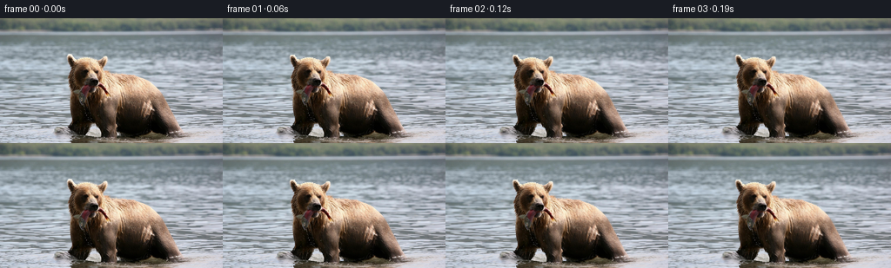
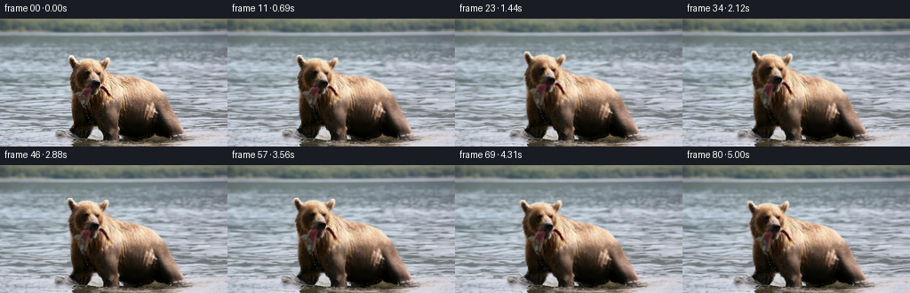
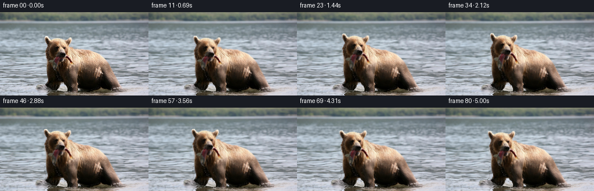
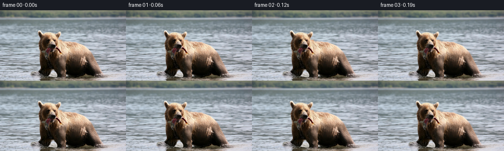

← 本轮 smoke 总览traex/GPT-6.1-Sol · 0872_s4
text · 256×144 · 16 FPS · 81 帧 · 状态 complete · 输出 tokens 12779
原始任务a brown bear in the water with a fish in its mouth
当前保存结果
已保存候选与代码修改
这里按时间展示外部捕获的候选，每份均可单独播放。保存新版本不等于完成视觉检查；下方工具证据记录实际看过的图。
候选 01 · 2026-11-08T21:33:55.009822+00:00 · 点开播放与检查图
inspection.png

transition_check.png

代码变化
--- 上一保存版本
+++ 本次保存版本
@@ -0,0 +1,165 @@
+"""First-frame-based RGB animation, using only analytic motion and source pixels."""
+from pathlib import Path
+import numpy as np
+from PIL import Image
+from scipy import ndimage
+import artifact_io
+
+ROOT = Path(__file__).resolve().parent
+H, W = 144, 256
+Y, X = np.mgrid[:H, :W].astype(np.float32)
+
+def smooth(a, b, value):
+ v = np.clip((value-a)/(b-a), 0, 1)
+ return v*v*(3-2*v)
+
+def sample(a, x, y):
+ coords = np.array([y, x])
+ if a.ndim == 2:
+ return ndimage.map_coordinates(a, coords, order=1, mode='reflect')
+ return np.stack([ndimage.map_coordinates(a[...,c], coords, order=1, mode='reflect') for c in range(a.shape[-1])], axis=-1)
+
+def build_matte(image):
+ # The warm, nearly black fur is very distinct from the cool stream.
+ # Fill interior grey pixels too (the muzzle, fish, and wet-fur highlights).
+ warm = (image[...,0]-image[...,2] > 5)
+ dark = image.max(axis=2) < 72
+ found = (warm | dark) & (Y >= 41) & (X > 74) & (X < 214)
+ found[Y>=132] = False
+ silhouette = np.zeros((H,W), bool)
+ for y in range(41,122):
+ xs = np.where(found[y])[0]
+ if len(xs):
+ if y < 48:
+ silhouette[y] = found[y]
+ else:
+ silhouette[y,xs.min():xs.max()+1] = True
+ for y in range(122,132):
+ # Preserve the gap between the foreleg and the near shoulder.
+ for left,right in [(76,105),(110,214)]:
+ xs=np.where(found[y,left:right])[0]+left
+ if len(xs): silhouette[y,xs.min():xs.max()+1]=True
+ # Foreground fur at the bottom is blended into the water surface.
+ found2 = (warm | dark) & (Y>=132) & (X>=79) & (X<=215)
+ found2 = ndimage.binary_closing(found2, structure=np.ones((2,3)))
+ silhouette |= found2
+ silhouette[-1] = (warm[-1] | dark[-1]) & (X[-1]>=80) & (X[-1]<=211)
+ # A narrow antialiased edge, without blurring the fur texture itself.
+ alpha=ndimage.gaussian_filter(silhouette.astype(np.float32), .48)
+ return alpha, silhouette
+
+def background_plate(image, alpha, mask):
+ # Only a thin strip of this fill is exposed by the subtle subject motion.
+ # Reflection-copy the nearby same-height water texture into that strip.
+ outside=~ndimage.binary_dilation(mask, iterations=2)
+ _, inds=ndimage.distance_transform_edt(~outside, return_indices=True)
+ nearest=image[inds[0], inds[1]].copy()
+ # Add source water detail for the interior of the repaired region.
+ texturex=14+np.mod(X*.79+Y*.31, 58)
+ texture=sample(image, texturex, Y)
+ distance=ndimage.distance_transform_edt(~outside)
+ mixing=smooth(2,13,distance)[...,None]
+ fill=nearest*(1-mixing)+texture*mixing
+ plate=image.copy()
+ enlarged=ndimage.binary_dilation(mask, iterations=1)
+ plate[enlarged]=fill[enlarged]
+ return plate
+
+def subject_displacement(x,y,t):
+ progress=smooth(0,4.8,t)
+ ramp=smooth(0,.45,t)
+ lower=1-smooth(99,137,y)
+ dx=-1.65*progress*lower
+ dy=-.38*np.sin(2*np.pi*.39*t)*ramp*lower
+ # Breathing affects the heavy shoulder only, not the skull or the water.
+ chest=smooth(63,87,y)*(1-smooth(115,139,y))*smooth(112,139,x)
+ breath=.0065*np.sin(2*np.pi*.36*t)
+ dx=dx+chest*(x-146)*breath
+ dy=dy-chest*.25*np.sin(2*np.pi*.36*t)
+ neck=(1-smooth(76,100,y))*(1-smooth(121,145,x))
+ lift=5.15*smooth(.35,2.0,t)-1.7*smooth(3.55,4.9,t)
+ bob=.52*np.sin(2*np.pi*.46*t)*ramp
+ # A very slight turn of the head, with all source fur moving coherently.
+ angle=.034*np.sin(2*np.pi*.155*t)*ramp-.015*progress
+ c,s=np.cos(angle),np.sin(angle)
+ u,v=x-107,y-81
+ turnx=c*u-s*v-u
+ turny=s*u+c*v-v
+ dx=dx+neck*(turnx-.6*progress)
+ dy=dy+neck*(turny-lift+bob)
+ # Small, intermittent biting motion. The fish stays with the original jaw.
+ chew=np.sin(2*np.pi*1.16*t)*ramp*(.42+.24*np.cos(2*np.pi*.19*t))
+ muzzle=np.exp(-((x-103)/16)**2-((y-79)/9)**2)
+ dy=dy+muzzle*chew*smooth(73,84,y)*.6
+ fish=np.exp(-((x-99)/5.8)**2)*smooth(79,89,y)*(1-smooth(103,116,y))
+ swing=(.75*np.sin(2*np.pi*.66*t)+.24*np.sin(2*np.pi*1.35*t))*ramp
+ dx=dx+fish*swing*smooth(80,105,y)
+ dy=dy+fish*.18*np.sin(2*np.pi*.9*t)*ramp
+ return dx,dy
+
+def water_motion(t):
+ depth=smooth(10,144,Y)
+ ramp=smooth(0,.6,t)
+ drift=-1.22*t*(.12+.88*depth)
+ dx=drift+depth*(1.07*(np.sin(.13*Y-.85*t)-np.sin(.13*Y))
+ +.51*(np.sin(.057*X+.21*Y-1.51*t)-np.sin(.057*X+.21*Y)))
+ dy=depth*(.39*(np.sin(.15*X+.12*Y-1.95*t)-np.sin(.15*X+.12*Y))
+ +.25*(np.sin(.082*X-.24*Y+.97*t)-np.sin(.082*X-.24*Y)))
+ shine=np.zeros((H,W),np.float32)
+ for cx,cy,rate in [(86,128,1.0),(193,132,.86)]:
+ px=X-cx; py=(Y-cy)*3.7
+ radius=np.sqrt(px*px+py*py+1)
+ envelope=np.exp(-(radius/52)**2)*smooth(100,122,Y)*ramp
+ phase=radius*.46-t*4.0*rate
+ initial=radius*.46
+ wave=(np.sin(phase)-np.sin(initial))*envelope
+ dx+=.37*wave*px/radius
+ dy+=.15*wave*py/radius
+ # Low-amplitude glints break up along existing surface detail.
+ streak=np.maximum(0,np.cos(phase))**12
+ prev=np.maximum(0,np.cos(initial))**12
+ shine+=(streak-prev)*envelope*3.5
+ return dx,dy,shine
+
+def main():
+ first=np.asarray(Image.open(ROOT/'first_frame.png').convert('RGB'), dtype=np.uint8)
+ assert first.shape == (H,W,3)
+ image=first.astype(np.float32)
+ alpha,mask=build_matte(image)
+ plate=background_plate(image,alpha,mask)
+ # Unmix antialiased edge pixels from the reconstructed water background.
+ # Keep opaque interior source pixels unchanged.
+ foreground=(image-(1-alpha[...,None])*plate)/np.maximum(alpha[...,None], .04)
+ foreground=np.clip(foreground,0,255)
+ premult=foreground*alpha[...,None]
+ frames=np.empty((81,H,W,3),np.uint8)
+ frames[0]=first
+ for i in range(1,81):
+ t=i/16
+ wx,wy,shine=water_motion(t)
+ bg=sample(plate,X-wx,Y-wy)
+ # Texture-dependent glints, using the same moving source water.
+ glints=.42+.58*smooth(80,180,bg.mean(axis=2))
+ bg+=shine[...,None]*glints[...,None]*np.array([.88,.97,1.0],np.float32)
+ # Invert the forward fur motion to obtain a crisp backward warp.
+ sx,sy=X.copy(),Y.copy()
+ for _ in range(4):
+ ux,uy=subject_displacement(sx,sy,t)
+ sx=X-ux; sy=Y-uy
+ a=sample(alpha,sx,sy)
+ subject=sample(premult,sx,sy)
+ # Extremely slight changes in wet-fur illumination during the head turn.
+ top=(1-smooth(80,115,sy))
+ illumination=1+.006*np.sin(2*np.pi*.21*t)*top
+ subject*=illumination[...,None]
+ frame=bg*(1-a[...,None])+subject
+ frames[i]=np.clip(np.rint(frame),0,255).astype(np.uint8)
+ assert np.array_equal(frames[0], first)
+ artifact_io.save(frames,ROOT)
+ # Numeric checks are available without visual inspection tools.
+ dif=np.abs(np.diff(frames.astype(np.int16),axis=0))
+ print('Generated:',frames.shape,frames.dtype)
+ print('Consecutive-frame mean absolute RGB differences:', np.round(dif.mean(axis=(1,2,3))[::10],3))
+ print('First-frame identity:', np.array_equal(frames[0],first))
+
+if __name__=='__main__': main()
候选 02 · 2026-11-08T21:34:45.672209+00:00 · 点开播放与检查图
inspection.png

transition_check.png

代码变化
--- 上一保存版本
+++ 本次保存版本
@@ -61,8 +61,7 @@
mixing=smooth(2,13,distance)[...,None]
fill=nearest*(1-mixing)+texture*mixing
plate=image.copy()
- enlarged=ndimage.binary_dilation(mask, iterations=1)
- plate[enlarged]=fill[enlarged]
+ plate[mask]=fill[mask]
return plate
def subject_displacement(x,y,t):
@@ -127,6 +126,12 @@
image=first.astype(np.float32)
alpha,mask=build_matte(image)
plate=background_plate(image,alpha,mask)
+ # Respect the RGB gamut when unmixing the outline. This prevents even a
+ # single-frame light/dark jump at a high-contrast ear or wet-fur edge.
+ minimum_dark=1-image/np.maximum(plate,1)
+ minimum_light=(image-plate)/np.maximum(255-plate,1)
+ minimum=np.maximum(minimum_dark,minimum_light).max(axis=2)
+ alpha=np.maximum(alpha,np.clip(minimum,0,1)).astype(np.float32)
# Unmix antialiased edge pixels from the reconstructed water background.
# Keep opaque interior source pixels unchanged.
foreground=(image-(1-alpha[...,None])*plate)/np.maximum(alpha[...,None], .04)
候选 03 · 2026-11-08T21:34:50.340127+00:00 · 点开播放与检查图
inspection.png

transition_check.png

代码变化
代码未变化；重新保存了产物。
可观测工具行为
命令 1 · 2026-11-08T21:29:57.051410+00:00/bin/bash -lc 'ls -la; cat prompt.txt; cat GENERATION_RULES.md'
exit 0 命令 2 · 2026-11-08T21:30:05.777898+00:00/bin/bash -lc "cat task_spec.json; cat artifact_io.py; python - <<'PY'
from PIL import Image
import numpy as np
im=np.array(Image.open('first_frame.png').convert('RGB'))
print(im.shape)
a=np.array(Image.fromarray(im).resize((96,54)))
# grayscale ascii
c=' .,:;irsXA253hMHGS#9B&@'
g=np.dot(a,[.2126,.7152,.0722]);
for r in g:print(''.join(c[min(len(c)-1,int(v/256*len(c)))] for v in r))
print('COARSE RGB')
a=np.array(Image.fromarray(im).resize((32,18)))
for y,row in enumerate(a):print(y,' '.join('%02x%02x%02x'%tuple(p) for p in row))
PY"exit 0 命令 3 · 2026-11-08T21:30:17.596705+00:00/bin/bash -lc "python - <<'PY'
from PIL import Image
import numpy as np
im=np.array(Image.open('first_frame.png').convert('RGB')).astype(float)
a=np.array(Image.fromarray(im.astype('uint8')).resize((128,72))).astype(float)
r,g,b=a.transpose(2,0,1)
# dominant hues - brown strong B, mid b, weak o, water . dark d bright *
for y in range(20,72):
s=''
for x in range(128):
if r[y,x]-b[y,x]>22:c='B'
elif r[y,x]-b[y,x]>11:c='b'
elif r[y,x]-b[y,x]>4:c='o'
elif max(r[y,x],g[y,x],b[y,x])<45:c='D'
elif max(r[y,x],g[y,x],b[y,x])<80:c='d'
elif min(r[y,x],g[y,x],b[y,x])>170:c='*'
else:c='.'
s+=c
print(f'{y*2:3}',s)
PY"exit 0 命令 4 · 2026-11-08T21:30:24.884477+00:00/bin/bash -lc "python - <<'PY'
import numpy as np
from PIL import Image
im=np.array(Image.open('first_frame.png'))
c=' .,:;irsXA253hMHGS#9B&@'
for y in range(38,105):
print(f'{y:3} '+''.join(c[int(np.mean(p)/256*len(c))] for p in im[y,70:150]))
print('RGB selected head grid step 3')
for y in range(54,94,3):
print(y, ' '.join(f'{x}:{im[y,x,0]:02x}{im[y,x,1]:02x}{im[y,x,2]:02x}' for x in range(82,133,3)))
PY"exit 0 命令 5 · 2026-11-08T21:30:39.033749+00:00/bin/bash -lc "python - <<'PY'
from PIL import Image
import numpy as np
im=np.array(Image.open('first_frame.png')).astype(float)
m=((im[:,:,0]-im[:,:,2])>8) | (im.max(axis=2)<70)
for y in range(38,144):
row=m[y, sixty:=60:221]; edges=np.diff(np.r_[False,row,False].astype(int)); runs=[(a+60,b+59) for a,b in zip(np.where(edges==1)[0],np.where(edges==-1)[0]) if b-a>=2]
print(y,runs)
PY"exit 1 命令 6 · 2026-11-08T21:30:48.779617+00:00/bin/bash -lc "python - <<'PY'
from PIL import Image
import numpy as np
im=np.array(Image.open('first_frame.png')).astype(float)
m=((im[:,:,0]-im[:,:,2])>8) | (im.max(axis=2)<70)
for y in range(38,144):
row=m[y,60:221]; edges=np.diff(np.r_[False,row,False].astype(int)); runs=[(a+60,b+59) for a,b in zip(np.where(edges==1)[0],np.where(edges==-1)[0]) if b-a>=2]
print(y,runs)
PY"exit 0 命令 7 · 2026-11-08T21:31:27.586938+00:00/bin/bash -lc "python - <<'PY'
from PIL import Image
import numpy as np
im=np.array(Image.open('first_frame.png')).astype(float)
for y in range(65,136):
s=''
for x in range(75,141):
r,g,b=im[y,x]
if max(r,g,b)<25:c=' '
elif r-b>20:c='B'
elif r-b>12:c='b'
elif r-b>6:c='o'
elif r-b>0 and r>75:c='s'
elif r>100 and b-r<7:c='S'
elif b-r>8 and b>120:c='~'
else:c='.'
s+=c
print(f'{y:3} {s}')
PY"exit 0 命令 8 · 2026-11-08T21:31:44.921815+00:00/bin/bash -lc "python - <<'PY'
import importlib.util
for name in ['scipy','cv2','imageio']:
print(name, bool(importlib.util.find_spec(name)))
from PIL import Image
import numpy as np
im=np.array(Image.open('first_frame.png')).astype(float)
for y in range(78,139,2):
print(f'{y:3}', ' '.join(f'{x}:{int(im[y,x,0]):02x}{int(im[y,x,1]):02x}{int(im[y,x,2]):02x}' for x in range(88,115,2)))
PY"exit 0 命令 9 · 2026-11-08T21:32:23.231780+00:00/bin/bash -lc "python - <<'PY'
import numpy as np
from PIL import Image
from scipy import ndimage as n
im=np.array(Image.open('first_frame.png')).astype(float)
hue=im[:,:,0]-im[:,:,2]
for y in range(39,64):
print(y,' '.join(f'{x}({hue[y,x]:.0f})' for x in range(72,130) if hue[y,x]>2))
PY"exit 0 命令 10 · 2026-11-08T21:33:51.870883+00:00/bin/bash -lc "cat > generate.py <<'PY'
\"\"\"First-frame-based RGB animation, using only analytic motion and source pixels.\"\"\"
from pathlib import Path
import numpy as np
from PIL import Image
from scipy import ndimage
import artifact_io
ROOT = Path(__file__).resolve().parent
H, W = 144, 256
Y, X = np.mgrid[:H, :W].astype(np.float32)
def smooth(a, b, value):
v = np.clip((value-a)/(b-a), 0, 1)
return v*v*(3-2*v)
def sample(a, x, y):
coords = np.array([y, x])
if a.ndim == 2:
return ndimage.map_coordinates(a, coords, order=1, mode='reflect')
return np.stack([ndimage.map_coordinates(a[...,c], coords, order=1, mode='reflect') for c in range(a.shape[-1])], axis=-1)
def build_matte(image):
# The warm, nearly black fur is very distinct from the cool stream.
# Fill interior grey pixels too (the muzzle, fish, and wet-fur highlights).
warm = (image[...,0]-image[...,2] > 5)
dark = image.max(axis=2) < 72
found = (warm | dark) & (Y >= 41) & (X > 74) & (X < 214)
found[Y>=132] = False
silhouette = np.zeros((H,W), bool)
for y in range(41,122):
xs = np.where(found[y])[0]
if len(xs):
if y < 48:
silhouette[y] = found[y]
else:
silhouette[y,xs.min():xs.max()+1] = True
for y in range(122,132):
# Preserve the gap between the foreleg and the near shoulder.
for left,right in [(76,105),(110,214)]:
xs=np.where(found[y,left:right])[0]+left
if len(xs): silhouette[y,xs.min():xs.max()+1]=True
# Foreground fur at the bottom is blended into the water surface.
found2 = (warm | dark) & (Y>=132) & (X>=79) & (X<=215)
found2 = ndimage.binary_closing(found2, structure=np.ones((2,3)))
silhouette |= found2
silhouette[-1] = (warm[-1] | dark[-1]) & (X[-1]>=80) & (X[-1]<=211)
# A narrow antialiased edge, without blurring the fur texture itself.
alpha=ndimage.gaussian_filter(silhouette.astype(np.float32), .48)
return alpha, silhouette
def background_plate(image, alpha, mask):
# Only a thin strip of this fill is exposed by the subtle subject motion.
# Reflection-copy the nearby same-height water texture into that strip.
outside=~ndimage.binary_dilation(mask, iterations=2)
_, inds=ndimage.distance_transform_edt(~outside, return_indices=True)
nearest=image[inds[0], inds[1]].copy()
# Add source water detail for the interior of the repaired region.
texturex=14+np.mod(X*.79+Y*.31, 58)
texture=sample(image, texturex, Y)
distance=ndimage.distance_transform_edt(~outside)
mixing=smooth(2,13,distance)[...,None]
fill=nearest*(1-mixing)+texture*mixing
plate=image.copy()
enlarged=ndimage.binary_dilation(mask, iterations=1)
plate[enlarged]=fill[enlarged]
return plate
def subject_displacement(x,y,t):
progress=smooth(0,4.8,t)
ramp=smooth(0,.45,t)
lower=1-smooth(99,137,y)
dx=-1.65*progress*lower
dy=-.38*np.sin(2*np.pi*.39*t)*ramp*lower
# Breathing affects the heavy shoulder only, not the skull or the water.
chest=smooth(63,87,y)*(1-smooth(115,139,y))*smooth(112,139,x)
breath=.0065*np.sin(2*np.pi*.36*t)
dx=dx+chest*(x-146)*breath
dy=dy-chest*.25*np.sin(2*np.pi*.36*t)
neck=(1-smooth(76,100,y))*(1-smooth(121,145,x))
lift=5.15*smooth(.35,2.0,t)-1.7*smooth(3.55,4.9,t)
bob=.52*np.sin(2*np.pi*.46*t)*ramp
# A very slight turn of the head, with all source fur moving coherently.
angle=.034*np.sin(2*np.pi*.155*t)*ramp-.015*progress
c,s=np.cos(angle),np.sin(angle)
u,v=x-107,y-81
turnx=c*u-s*v-u
turny=s*u+c*v-v
dx=dx+neck*(turnx-.6*progress)
dy=dy+neck*(turny-lift+bob)
# Small, intermittent biting motion. The fish stays with the original jaw.
chew=np.sin(2*np.pi*1.16*t)*ramp*(.42+.24*np.cos(2*np.pi*.19*t))
muzzle=np.exp(-((x-103)/16)**2-((y-79)/9)**2)
dy=dy+muzzle*chew*smooth(73,84,y)*.6
fish=np.exp(-((x-99)/5.8)**2)*smooth(79,89,y)*(1-smooth(103,116,y))
swing=(.75*np.sin(2*np.pi*.66*t)+.24*np.sin(2*np.pi*1.35*t))*ramp
dx=dx+fish*swing*smooth(80,105,y)
dy=dy+fish*.18*np.sin(2*np.pi*.9*t)*ramp
return dx,dy
def water_motion(t):
depth=smooth(10,144,Y)
ramp=smooth(0,.6,t)
drift=-1.22*t*(.12+.88*depth)
dx=drift+depth*(1.07*(np.sin(.13*Y-.85*t)-np.sin(.13*Y))
+.51*(np.sin(.057*X+.21*Y-1.51*t)-np.sin(.057*X+.21*Y)))
dy=depth*(.39*(np.sin(.15*X+.12*Y-1.95*t)-np.sin(.15*X+.12*Y))
+.25*(np.sin(.082*X-.24*Y+.97*t)-np.sin(.082*X-.24*Y)))
shine=np.zeros((H,W),np.float32)
for cx,cy,rate in [(86,128,1.0),(193,132,.86)]:
px=X-cx; py=(Y-cy)*3.7
radius=np.sqrt(px*px+py*py+1)
envelope=np.exp(-(radius/52)**2)*smooth(100,122,Y)*ramp
phase=radius*.46-t*4.0*rate
initial=radius*.46
wave=(np.sin(phase)-np.sin(initial))*envelope
dx+=.37*wave*px/radius
dy+=.15*wave*py/radius
# Low-amplitude glints break up along existing surface detail.
streak=np.maximum(0,np.cos(phase))**12
prev=np.maximum(0,np.cos(initial))**12
shine+=(streak-prev)*envelope*3.5
return dx,dy,shine
def main():
first=np.asarray(Image.open(ROOT/'first_frame.png').convert('RGB'), dtype=np.uint8)
assert first.shape == (H,W,3)
image=first.astype(np.float32)
alpha,mask=build_matte(image)
plate=background_plate(image,alpha,mask)
# Unmix antialiased edge pixels from the reconstructed water background.
# Keep opaque interior source pixels unchanged.
foreground=(image-(1-alpha[...,None])*plate)/np.maximum(alpha[...,None], .04)
foreground=np.clip(foreground,0,255)
premult=foreground*alpha[...,None]
frames=np.empty((81,H,W,3),np.uint8)
frames[0]=first
for i in range(1,81):
t=i/16
wx,wy,shine=water_motion(t)
bg=sample(plate,X-wx,Y-wy)
# Texture-dependent glints, using the same moving source water.
glints=.42+.58*smooth(80,180,bg.mean(axis=2))
bg+=shine[...,None]*glints[...,None]*np.array([.88,.97,1.0],np.float32)
# Invert the forward fur motion to obtain a crisp backward warp.
sx,sy=X.copy(),Y.copy()
for _ in range(4):
ux,uy=subject_displacement(sx,sy,t)
sx=X-ux; sy=Y-uy
a=sample(alpha,sx,sy)
subject=sample(premult,sx,sy)
# Extremely slight changes in wet-fur illumination during the head turn.
top=(1-smooth(80,115,sy))
illumination=1+.006*np.sin(2*np.pi*.21*t)*top
subject*=illumination[...,None]
frame=bg*(1-a[...,None])+subject
frames[i]=np.clip(np.rint(frame),0,255).astype(np.uint8)
assert np.array_equal(frames[0], first)
artifact_io.save(frames,ROOT)
# Numeric checks are available without visual inspection tools.
dif=np.abs(np.diff(frames.astype(np.int16),axis=0))
print('Generated:',frames.shape,frames.dtype)
print('Consecutive-frame mean absolute RGB differences:', np.round(dif.mean(axis=(1,2,3))[::10],3))
print('First-frame identity:', np.array_equal(frames[0],first))
if __name__=='__main__': main()
PY
python generate.py"exit 0 命令 11 · 2026-11-08T21:34:07.888270+00:00/bin/bash -lc "python - <<'PY'
from pathlib import Path
import numpy as np
from PIL import Image
import generate
p=Path('.')
z=np.load(p/'pixels.npz')['pixels']
f=np.stack([(z>>16)&255,(z>>8)&255,z&255],-1).astype('uint8').transpose(2,0,1,3)
original=np.asarray(Image.open('first_frame.png').convert('RGB'))
a,m=generate.build_matte(original.astype('float32'))
print('Packed RGB shape:',z.shape,'decoded:',f.shape)
print('Exact frame 00:',np.array_equal(f[0],original))
print('PNG count:',len(list((p/'frames').glob('*.png'))))
print('Mask area:',m.sum())
for i in [1,16,32,48,64,80]:
d=np.abs(f[i].astype(float)-original.astype(float)).mean(2)
print('frame',i, 'water change',round(d[~m].mean(),2),'fur change',round(d[m].mean(),2),'max difference',round(d.max(),1))
print('Outputs:',[(f.name,f.stat().st_size) for f in [p/'pixels.npz',p/'index.html',p/'inspection.png']])
PY"exit 0 命令 12 · 2026-11-08T21:34:20.655455+00:00/bin/bash -lc "python - <<'PY'
import generate as g
from PIL import Image
import numpy as np
im=np.asarray(Image.open('first_frame.png')).astype('float32'); a,m=g.build_matte(im); p=g.background_plate(im,a,m)
f=np.clip((im-(1-a[...,None])*p)/np.maximum(a[...,None],.04),0,255)*a[...,None]
r=p*(1-a[...,None])+f; d=np.abs(r-im).mean(2)
print('zero pose reconstruction error',d.mean(),d.max(),(d>10).sum())
inds=np.dstack(np.unravel_index(np.argsort(d.ravel())[-15:],d.shape))[0]
for y,x in inds:print(y,x,'alpha',a[y,x],'rgb',im[y,x], 'result',r[y,x])
PY"exit 0 命令 13 · 2026-11-08T21:34:44.106856+00:00/bin/bash -lc "python generate.py; python - <<'PY'
import numpy as np
from PIL import Image
z=np.load('pixels.npz')['pixels']
a=np.array(Image.open('first_frame.png').convert('RGB'))
p=(a[:,:,0].astype(np.uint32)<<16)|(a[:,:,1].astype(np.uint32)<<8)|a[:,:,2]
assert z.shape==(144,256,81) and np.array_equal(z[:,:,0],p)
f0=a.astype(float); q=z[:,:,1]; f1=np.stack([(q>>16)&255,(q>>8)&255,q&255],-1)
d=np.abs(f1-f0).mean(2)
print('Final first transition: mean',d.mean(),'maximum',d.max())
print('Output contract validated.')
PY"exit 0 保存候选 3 份；完成命令 13 次；可验证图片返回 0 张。原始 API 响应与完整日志保留在本地。